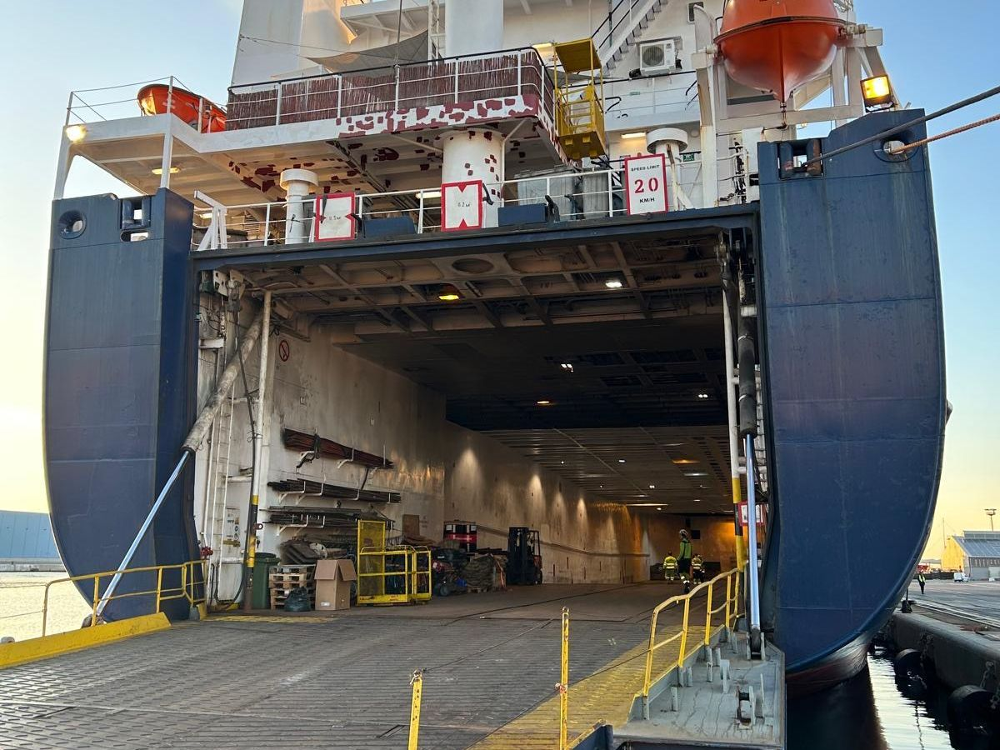
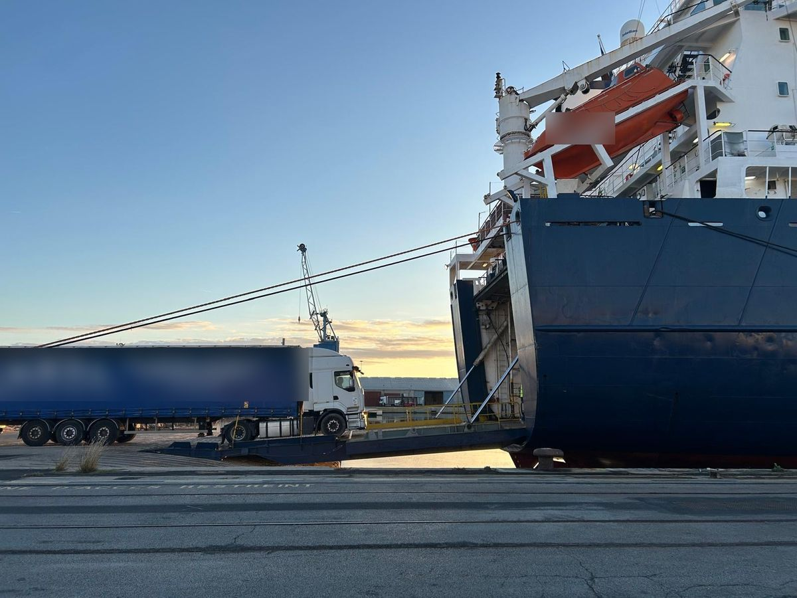
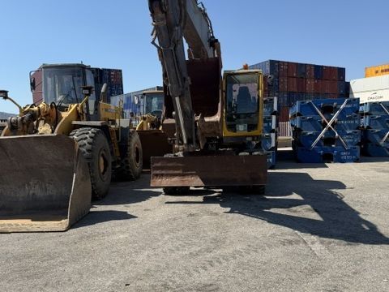

Transport maritime et routierEurope – Afrique du Nord
MSI organise le transport de vos marchandises par mer et par route entre la France, l'Espagne, l'Italie, le Maroc et l'Algérie.
Trois savoir-faire, un même objectif

RO-ROTransport maritime Ro-Ro
Véhicules, engins et marchandises roulantes embarqués par rampe.
En savoir plus →
ROUTIERTransport routier
Fret par camion en Europe et en Afrique du Nord.
En savoir plus →
LOGISTIQUESolutions logistiques
Affrètement, commission de transport, dédouanement, stockage.
En savoir plus →Un partenaire pour relier les deux rives
Fiabilité
Des engagements tenus et un transport organisé avec rigueur.
Clarté
Une information claire à chaque étape, des échanges simples.
Réactivité
Une réponse adaptée à chaque demande, des formalités anticipées.
Accompagnement
Un suivi du besoin à la livraison, par mer comme par route.
Du besoin à la livraison, quatre étapes
Votre besoin
Marchandises, trajet, contraintes.
Le bon mode
Mer, route, ou les deux.
L'organisation
Affrètement, formalités, documents.
L'acheminement
Prise en charge puis livraison.
De la France au Maroc et à l'Algérie
Des liaisons entre l'Europe et l'Afrique du Nord, appuyées sur des ports et hubs de référence.
Voir les zonesUn transport à organiser ?
Parlez-nous de votre trajet et de vos marchandises.